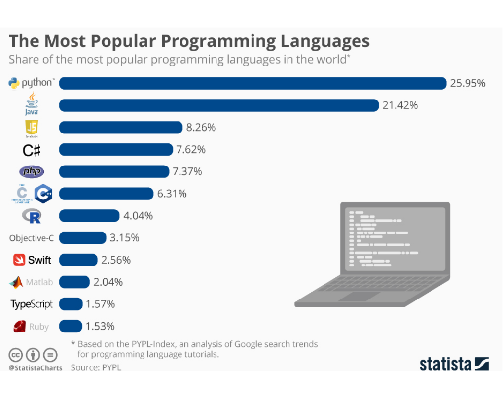

Pesquisa Nacional por Amostra de Domicílios Contínua (PNADC)
Dia 2 - R e manipulação dos dados da PNADC
Doutorando, Centre d’Estudis Demogràfics (CED, Espanha)
Pesquisador Assistente (Cebrap)
October 8, 2025
Antes de começar…
lista de presença!

Antes de começar (2)…
Dúvidas gerais sobre a aula anterior?
Sobre sala de sigilo do IBGE: há somente para Censo Agrop. e Empresas
Sobre as FCUs nos estratos da AM: não garantirá que possamos gearar estimativas para este subgrupo
Exercício da aula anterior: dúvidas, comentários, considerações?

Estrutura da aula
Tópicos que vamos cobrir hoje são:
Ciclos de análise de dados (e pesquisa)
(Breve) Introdução ao R e RStudio
Trabalhando com dados de pesquisa amostral complexa
PNADC no R
Ciclos de análise de dados
Análise de dados, pesquisa e R
Análise de dados, pesquisa e R
Fluxo de análise de dados1 que, geralmente, seguimos:

Análise de dados, pesquisa e R
Fluxo de análise de dados1 que, geralmente, seguimos:
Introdução ao R e RStudio
Os softwares
R
Sobre a linguagem R
Criada em 1995
É uma linguagem de programação open source muldialmente conhecida e utilizada
Por ser mundialmente conhecida e utilizada… há uma grande comunidade de usuários que contribuem para a sua melhoria
Principais funções do R
Manipulação de dados
Ferramentas estatísticas
Produção de gráficos de alta qualidade
Georreferenciamento
Motivações para aprender (e se aprofundar):
Independência de outros programas pagos
Imensa potencialidade das analises possíveis de serem feitas
Capacidade de trabalhar com análises QUANTI e QUALI em um único software
Capacidade de desenvolver/implementar seus próprios algorítmos
Elevadíssima empregabilidade

RStudio
Sobre a IDE
É um IDE (Integrated Development Environment) criada para o R;
É um ambiente mais amigável de se trabalhar do que no R;
Facilita e potencializa a programação em uma determinada linguagem
RStudio não é a única IDE do R, há outras que podem ser vistas e usadas por aí:
VSCODE
PyCharm
Eclipse
…
Introdução ao R e RStudio
Conceitos básicos para a PNADC
Conceitos básicos para a PNADC
Objetos de armazenamento no R
Objeto: é um “nome” que damos para guardar algum valor ou atributo.
- Usamos
<-ou=para atribuir algum valor a um nome.
- Usamos
Vetor: é um conjunto de valores de mesma classe atribuídos a um objeto.
- Usamos, em geral, a função
c()para concatenar os valores no objeto.
- Usamos, em geral, a função
Dataframes: são objetos que guardam nossos dados. Possuem linhas e colunas.
Todos os seus elementos (colunas) têm que ter o mesmo número de linhas
Todos os seus elementos (colunas) precisam ser nomeados.
Têm duas dimensões.
Listas: é uma generalização dos datataframes e vetores. Permite agregar diferentes classes de objetos dentro dela.
Todo dataframe é uma lista
Todo vetor é uma lista.
Conceitos básicos para a PNADC
Outros aspectos importantes
Cada coluna de um dataframe é tratada como uma variável
- Cada coluna/variável deve, assim, ter somente uma classe/tipo.
É possível armazenar uma variável em um vetor
- Este vetor, por sua vez, pode ser inserido em um dataframe posteriormente.
Survey Design: no R, é um tipo de objeto.
É tratado assim quando é declarado como tal.
Deve ser fruto de uma pesquisa amostral cujo o seu uso exige que se estabeleça ponderações previamente determinadas.
Para tanto, é importante que se conheça a documentação da pesquisa a ser utilizada
Conceitos básicos para a PNADC
O R é uma linguagem de programação muito próximo da forma “falada”.
Comandos
- Nós usamos “verbos” (comandos/funções) para indicar as ações que queremos conduzir no R.
Comandos básicos do R (R base)
- São comandos que estão na raiz do programa, eles vêm junto com a sua instalação.
Pacotes
São conjuntos de comandos (funções) que baixamos em nossa máquina e executamos para obter processamentos específicos.
Um pacote pode contar uma série de funções/comandos.
Visão geral de como funciona o RStudio
Visão geral de como funciona o RStudio
Visão geral de como funciona o RStudio
Visão geral de como funciona o RStudio
Visão geral de como funciona o RStudio
Buscando ajuda
A maior arte do saber programar é saber onde procurar por resoluções dos problemas!!!
Buscando ajuda
Onde buscar?
Por haver uma grande comunidade de usuários do R, há uma grande produção de conteúdos.
O Google é uma ferramenta de busca capaz de selecionar alguns conteúdos associados à sua busca1.
Stack Overflow
- É um site de pergunta e resposta muito utilizado em outros países. É fortemente alimentado por usuários de linguagem de programação (inclusive R!!!)2.
Buscando ajuda
Onde buscar?
IA’s
Enquanto uma ferramenta de IA, auxilia na compreensão de problemas de programação ou para oferecer alternativas não imaginadas.
Usemos com cautela…
Buscando ajuda
Onde buscar?
IA’s
Enquanto uma ferramenta de IA, auxilia na compreensão de problemas de programação ou para oferecer alternativas não imaginadas.
Usemos com cautela…
Exercício!
Usando a planilha “Trabalhadores”, disponível na pasta “arquivos complementares > prática”, calcule:
Qual a média salarial de cada trabalhador (média entre salário anterior e o salário atual)?
Faça uma coluna dizendo se o salário atual é “MAIOR” ou “MENOR” que o salário anterior.
Qual a média de idade de todos os trabalhadores?
Pausa!
Trabalhando com dados de pesquisa amostral complexa
Pesos amostrais
Peso amostral
É uma variável (ou um conjunto delas) que ajusta, pondera e expande os resultados de uma determinada amostra.
Algumas observações sobre os pesos:
Garantem a representatividade dos dados que estamos trabalhando para a unidade de análise.
Realizar análises com a PNADC sem declarar/aplicar seus pesos incorre em um grave erro e pode gerar estimativas viesadas1.
Há pacotes que otimizam nossa análise por não precisarmos de declarar os pesos ou precisarmos de declarar somente uma vez:
{PNADcIBGE}{
survey}
Pesos amostrais
Os pesos nos dizem sobre:
Precisão da estimativa
Incerteza da estimativa
Pesos amostrais
Quando se aplica os pesos:
Estamos ponderando cada observação da nossa amostra pela sua importância relativa na população.
Amostra PNADC: Domicílios em que informações foram coletadas na pesquisa.
População PNADC: Recenseamento brasileiro de domicílios.
Pesos amostrais
Atenção!
A PNADC é uma pesquisa que tem como unidade de amostragem os domicílios
Seus pesos são os mesmos para todos os indivíduos de um determinado domicílio.
Quando expandidos, vão acompanhar determinadas características da população:
Para Brasil e UFs: total, idade e sexo
Para demais níveis geográficos: total
Nível do domicílio ou dos indivíduos?
Nossa unidade de coleta é cada domicílio, mas coletamos dados também das pessoas (moradores).
Peso de cada domicílio e pessoa
Domicílio: recebe um peso relativo ao extrato ao qual ele se encontra.
- Compreender o modo como a Amostra Mestre é construída é importante por isso!
Pessoa: todas de um domicílio recebem o mesmo peso1.
Nível do domicílio ou dos indivíduos?
Chave de identificação de cada pessoa e domicílio:
Domicílio: \[UPA + V1008 + V1014\]
Pessoa: \[UPA + V1008 + V1014 + V2003 = Domicílio + V2003\]
Em que:
\(UPA\): Unidade Primária de Amostragem
\(V1008\): Número de Seleção de Domicílios
\(V1014\): Número do painel
\(V2003\): Número de ordem da pessoa no domicílio
Trabalhando com dados de pesquisa amostral complexa
Medidas
Medidas de Tendência Central
Sinaliza para tendências gerais (médias) de determinada distribuição.
As medidas de tendência central são bastante utilizadas para sintetizar/resumir os possíveis/prováveis valores a serem encontrados em uma distribuição.
Média: é a principal das medidas de tendência central
Ela nos diz que, a depender da distribuição de nossos valores, em geral, temos grande chance de obtermos, aleatoriamente, um valor que se aproxime do valor médio.
Por termos uma amostra aleatória e representativa para as unidades geográficas que estudamos, podemos dizer que os valores médios de nossos indicadores representam aqueles valores mais esperados de serem encontrados para a unidade de análise.
Uma estimativa é também um valor médio (!)
Medidas
Alguns tipos de medidas:
Números absolutos
Proporção
Razão
Média/moda/mediana/…
Técnicas de avaliação da qualidade da estimativa
Há algumas formas de avaliarmos a qualidade das estimativas através de medidas de variabilidade.
Técnicas de avaliação da qualidade da estimativa
Há algumas formas de avaliarmos a qualidade das estimativas através de medidas de variabilidade.
Intervalo de Confiança
Diz respeito à confiabilidade das estimativas produzidas.
Os limites dizem qual é a faixa dentro da qual os resultados podem variar, caso o estudo seja repetido N vezes.
Coeficiente de Variação (CV) ou Desvio Padrão Relativo (DPR)1
É um indicador de medida relativa de previsão.
Calculado como Razão entre erro padrão e a média (valor estimado do indicador).
Em geral, é multiplicado por 100.
Técnicas de avaliação da qualidade da estimativa
Há algumas formas de avaliarmos a qualidade das estimativas através de medidas de variabilidade.
Intervalo de Confiança
Diz respeito à confiabilidade das estimativas produzidas.
Os limites dizem qual é a faixa dentro da qual os resultados podem variar, caso o estudo seja repetido N vezes.
Coeficiente de Variação (CV) ou Desvio Padrão Relativo (DPR)1

PNADC no R
Complementos
Na aula anterior, aprendemos como acessar os microdados no site do IBGE…
Alguns materiais complementares (também conhecidos como documentação) são importantes de serem acessados sempre que houver dúvida na pesquisa:
Questionário: onde há a descrição das variáveis existentes
Notas Técnicas: onde se descreve mudanças metodológicas ocorridas ou erros identificados.
Metodologia: onde está descrito estratégias tomadas para criação da pesquisa.
Dicionário de variáveis: é onde se encontra o código da variável, descrição de valores possíveis e tamanho da variável.
Inputs: é um arquivo organizado de modo a facilitar a importação dos dados.
Pacotes para análise dos dados da PNADC em R
Principais pacotes para facilitar a análise e modelagem dos microdados da PNAD Contínua em R:
{PNADcIBGE}: permite baixar e preparar os microdados da PNAD Contínua para análise.{survey}: pacote que permite análise e modelagem de dados provenientes de pesquisas com amostras complexas, em geral.
Pacotes para análise dos dados da PNADC em R
Primeiro, instalamos os pacotes em R1…
PNADcIBGE:
install.packages("survey")survey:
install.packages("survey")
Pacotes para análise dos dados da PNADC em R
Depois, carregamos os pacotes de interesse1…
- PNADcIBGE:
- survey:
Fazendo download dos bancos de dados em R
1. Diretamente no R: É possível baixar diretamente no R, selecionando as variáveis desejadas e já contemplando o plano amostral1.
Exemplo 1: Baixando o banco do segundo trimestre de 2023
Exemplo 2: Microdados anuais concentrados em determinado trimestre (2020, 2º trimestre)
Fazendo download dos bancos de dados em R
2. É possível baixar no site do IBGE e abrir no R: Neste caso, será necessário atribuir o “input” e os labels das variáveis. Para isso, é necessário que o banco de dados, o arquivo de input (.txt) e o dicionário (xls) estejam todos baixados. Todos esses 3 arquivos (banco de dados, input e dicionário) podem ser baixados no site do IBGE.
Exemplo de código para isso: Terceiro trimestre de 2016
# 1 - Atribuindo um Working diretory (precisa ser a pasta onde os arquivos que você baixou do site do IBGE estão)
setwd("C:/Users/User/Desktop/Aulas/Cebrap/Práticas em R/")
# 2 - Abrindo o banco do terceiro trimestre de 2016 que baixei no site do IBGE
Pnad_3trim_2016 <- read_pnadc(
microdata = "PNADC_032016.txt",
input_txt = "input_PNADC_trimestral.txt"
)
# 3 - Atribuindo os labels ao banco de 2016
Pnad_3trim_2016 <- pnadc_labeller(
data_pnadc = Pnad_3trim_2016,
dictionary.file = "dicionario_PNADC_microdados_trimestral.xls"
)
# 4 - Atribuindo o plano amostral ao banco de dados
Pnad_3trim_2016 <- pnadc_design(Pnad_3trim_2016 )Exercício!
Abram script praticas > Dia 2 - Intro Pnad.R.
Isso é tudo para hoje!
Para próxima aula:
- Exercícios assíncrono
- Leitura de material para aula de hoje (caso não tenha lido)
- Leitura de material para a aula seguinte (Ver ementa): validação de estimativas obtidas com a PNADC
Orientações sobre o exercício (1/2)
Baixar a Pnad trimestral do 1º, 2º, 3º e 4º trimestre de 2021.
- Qual é o número de empregados com carteira assinada em cada um dos trimestres (VD4009)?
- Faça um gráfico de linha no Excel (ou R) do 1º ao 4º trimestre com o retrato dessa variável em cada um dos trimestres.
- Qual a condição de ocupação na semana de referência para pessoas de 14 anos ou mais de idade em cada um dos 4 trimestres? (VD4002)
- Faça um gráfico de linha no Excel (ou R) do 1º ao 4º trimestre com o retrato dessa variável em cada um dos trimestres.
Orientações sobre o exercício (2/2): Dica…
- Você precisará criar 4 objetos survey. Ou seja, o comando abaixo precisará ser dado 4 vezes, uma para cada trimestre.
NOME_1 <- get_pnadc(year = ANO, quarter = TRIMESTRE, design = TRUE, vars = c(“VAR", “VAR"))
NOME_2 <- get_pnadc(year = ANO, quarter = TRIMESTRE, design = TRUE, vars = c(“VAR", “VAR"))
NOME_3 <- get_pnadc(year = ANO, quarter = TRIMESTRE, design = TRUE, vars = c(“VAR", “VAR"))
NOME_4 <- get_pnadc(year = ANO, quarter = TRIMESTRE, design = TRUE, vars = c(“VAR", “VAR"))
Além disso, executará o comando
svytotal()para cada um desses objetos criados;Para cada um deles, vai gerar um Excel/CSV e depois você irá, manualmente, uni-los em um excel à parte.

Presidência
Diretoria Administrativa
Diretoria Científica
Coordenação de Seminários
Coordenação de Cursos
Adrian Gurza Lavalle
Victor Callil
Arilson Favareto
Bianca Tavolari
Monise Fernandes Picanço
Curso
Pesquisa Nacional por Amostra de Domicílios Contínua (PNADC)
Ministrante
Thiago Cordeiro Almeida
E-mail: thiagocordalmeida@gmail.com
Github: @thiagocalm
cebrap.lab - PNADC